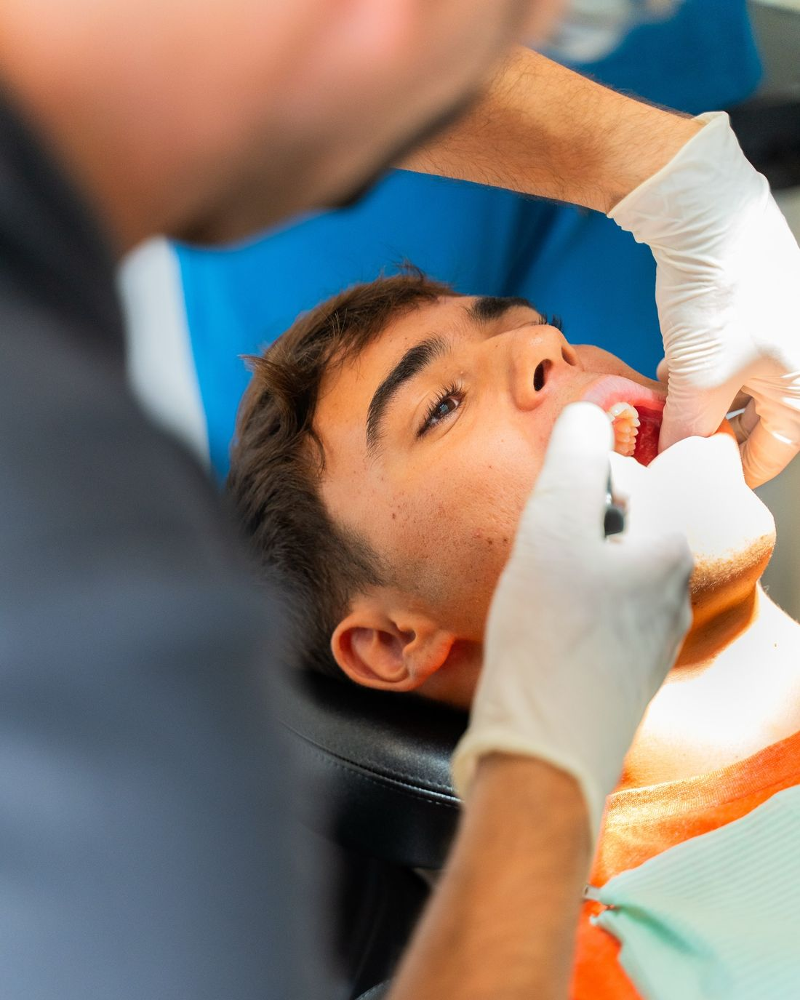
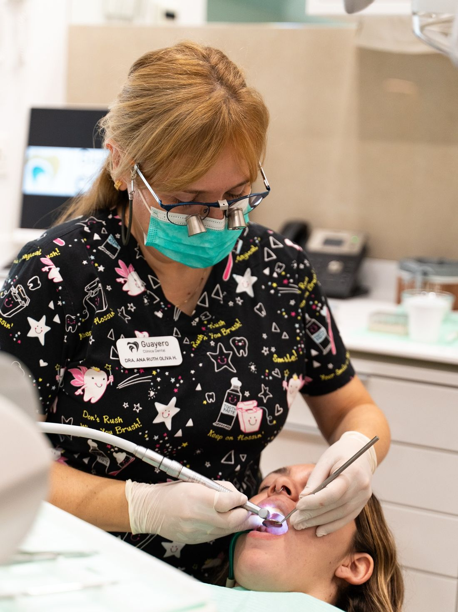
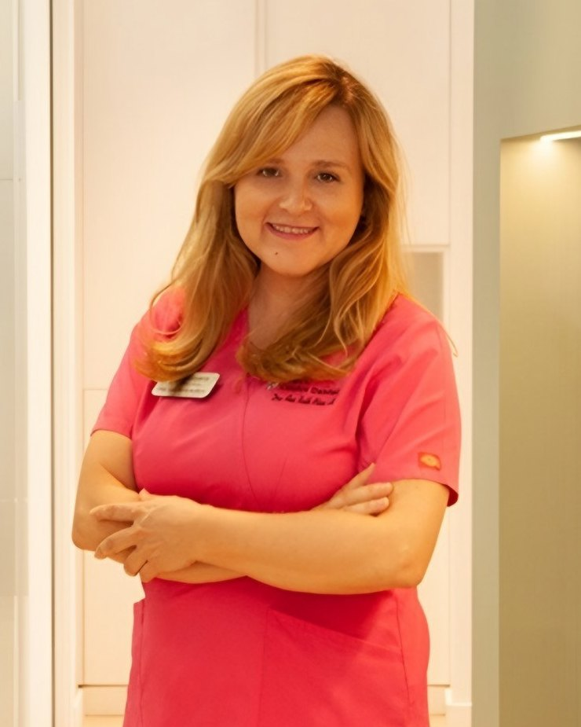

+20 Años de experiencia
Filosofía basada en la confianza, la profesionalidad y el trato individualizado según la necesidad de cada persona.
Brackets autoligables Sistema Damon y alineadores transparentes Invisalign y Spark para niños, adolescentes y adultos. En Clínica Dental Guayero estudiamos tu mordida con radiología 3D y escáner intraoral, y la Dra. Ana Ruth Oliva, máster en Ortodoncia, dirige cada tratamiento.
Pide tu estudio de ortodonciaDesde la apertura de la clínica en 1999, cientos de pacientes han realizado su tratamiento de ortodoncia en Guayero, principalmente niños pero también muchos adultos. Empleamos una amplia variedad de técnicas para adaptar el tratamiento a cada boca y a cada etapa de la vida.
Durante el crecimiento es posible guiar el desarrollo de los maxilares y de la mordida. Por eso conviene hacer una primera valoración de ortodoncia en la infancia, aunque todavía no se hayan cambiado todos los dientes.
Con la telerradiografía podemos estudiar el crecimiento y decidir si basta con hacer seguimiento o si conviene empezar un tratamiento. Más información en odontopediatría en Los Cristianos.
Nunca es tarde para corregir la posición de los dientes. En adultos, la ortodoncia puede mejorar la estética de la sonrisa, la mordida y la facilidad para mantener una buena higiene.
Antes de empezar revisamos el estado de las encías y de los dientes. Muchos adultos eligen la ortodoncia invisible con Invisalign por su discreción.
El Sistema Damon utiliza brackets autoligables que trabajan con fuerzas ligeras y menor fricción. Este enfoque busca tratamientos cómodos y eficientes y, en muchos casos, permite tratar sin extracciones.
Te explicaremos si este sistema está indicado en tu caso, cuánto puede durar el tratamiento y con qué frecuencia tendrás que venir a revisión.

En Guayero ofrecemos tratamientos con alineadores transparentes y removibles Invisalign y Spark. El estudio de los dientes y la mordida permite valorar si esta opción es adecuada para cada paciente.
Conoce las fases, el uso diario y el seguimiento en nuestra página de ortodoncia invisible en Los Cristianos, o compara opciones en Invisalign o brackets.

Cada tratamiento empieza por un diagnóstico completo, hecho en la propia clínica: radiografía panorámica y telerradiografía, fotografías y registro digital con el escáner intraoral 3Shape TRIOS 3.
Con estos datos te explicamos qué ocurre, qué opciones tienes, cuánto puede durar el tratamiento y el presupuesto, antes de empezar.
Al terminar, los dientes tienden a volver a su posición. Por eso la fase de retención, con retenedores fijos o removibles, es parte del tratamiento.
Te explicaremos cómo usar y cuidar tus retenedores y las revisiones previstas para que la sonrisa se mantenga en el tiempo.

La Dra. Ana Ruth Oliva Hernández tiene el máster en Ortodoncia y Odontopediatría por la Universidad de Alcalá, el diploma de Especialista Universitario en Odontopediatría y Ortodoncia por la Universidad de Sevilla y el diploma universitario en Ortodoncia Cráneo-mandibular por la Universidad de Viena (VIESID).
Es especialista en ortodoncia invisible con Invisalign y Spark y dirige la clínica desde su apertura en 1999.
Conoce a nuestro equipoEs recomendable una primera valoración en la infancia, hacia los 6 o 7 años, cuando empiezan a salir los dientes definitivos. No siempre hace falta tratar en ese momento, pero permite detectar a tiempo problemas de crecimiento o de mordida.
Sí. Mientras los dientes y las encías estén sanos, la ortodoncia puede hacerse a cualquier edad. Antes de empezar revisamos tu salud bucodental y te explicamos las opciones, incluidos los alineadores transparentes.
Depende de la complejidad del caso, de la edad y de la técnica elegida. Tras el estudio te daremos una estimación de la duración y revisaremos la evolución en cada cita.
Es habitual notar presión o sensibilidad los primeros días y después de cada ajuste, que suele ceder en pocos días. Te daremos consejos para esos días y qué hacer si algún bracket roza.
Los brackets Damon son autoligables: sujetan el arco sin gomas ni ligaduras, con fuerzas ligeras y menos fricción. Te explicaremos si están indicados en tu caso y cómo se comparan con otras opciones.
El presupuesto depende del diagnóstico, de la técnica (brackets o alineadores) y de la duración prevista. Tras el estudio te presentaremos un presupuesto por escrito, que incluye las revisiones y la retención prevista.
Estamos en Av. Juan Carlos I, 26, Edificio Guayero, locales 7, 8 y 9, 38650 Los Cristianos, con aparcamiento en el edificio. Atendemos a familias de Los Cristianos, Arona y todo el sur de Tenerife. Llámanos al 922 79 74 05.
Filosofía basada en la confianza, la profesionalidad y el trato individualizado según la necesidad de cada persona.
Además de un gran equipo médico y humano, nuestros centros disponen de la más alta tecnología para ofrecer la máxima calidad.
Nuestras instalaciones son modernas y cómodas, adaptadas para todo tipo de minusvalías, por eso están a pie de calle.
Si desea más información sobre nuestros servicios o solicitar una cita, póngase en contacto con nosotros.
clinicaguayero@gmail.com
Avda. Juan Carlos I, 26 –
Edificio Guayero, Locales 7, 8 y 9
38650 Los Cristianos
Lunes a Viernes de 10:00-19:00h